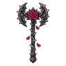
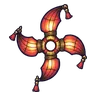
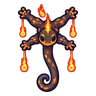
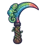

กิ้งก่าทรายจ่าฝูง
มอนธาตุไฟ Lv 72–80
เจอที่
| แมพ | โซน | Lv | ภูมิภาค |
|---|---|---|---|
| ใจกลางหุบผา | 72–80 | แดนใต้สีแดง | |
| ใจกลางหุบผา | หลุมราชาแมงป่อง | 78–80 | แดนใต้สีแดง |
| โอเอซิสแห้งขอด | 72–80 | แดนใต้สีแดง | |
| โอเอซิสแห้งขอด | บ่อน้ำแห้ง | 78–80 | แดนใต้สีแดง |
| ทุ่งหลุมแมลงช้าง | 72–80 | แดนใต้สีแดง | |
| ทุ่งหลุมแมลงช้าง | หลุมทรายยักษ์ | 78–80 | แดนใต้สีแดง |
| ป้อมโจรทะเลทรายร้าง | 72–80 | แดนใต้สีแดง | |
| ป้อมโจรทะเลทรายร้าง | ป้อมไม้บนหิน | 78–80 | แดนใต้สีแดง |
ค่าสถานะตามเลเวล
| Lv | HP | ATK | DEF | MDEF | EXP | Job |
|---|---|---|---|---|---|---|
| 72 | 45,623 | 166–248 | 32 | 11 | 124 | 93 |
| 76 | 53,070 | 177–265 | 33 | 11 | 130 | 98 |
| 80 | 61,750 | 189–283 | 35 | 12 | 136 | 102 |
ตีด้วยธาตุไหนดี
แรงขึ้น: น้ำ ×1.5 พิษ ×1.25
เบาลง: ดิน ×0.5 ไฟ ×0.25
วัตถุดิบที่ดรอป
| ของ | โอกาส | |
|---|---|---|
| เกล็ดแผงคอกิ้งก่า | 55% | 1 ชิ้น (15% ได้ 2) |
อุปกรณ์ที่ดรอป (7)
| ของ | โอกาส |
|---|---|
| ชุดกิ้งก่าทราย (เสื้อ) | 0.15% |
| ชุดกิ้งก่าทราย (กางเกง + รองเท้า) | 0.15% |
 ขวานยักษ์กุหลาบหนาม | 0.12% |
 ดาวยักษ์โคมกระดาษพับ | 0.12% |
 ไม้เชิดหุ่นซาลาแมนเดอร์ | 0.12% |
 เคียวคู่เกล็ดกิ้งก่าเปลี่ยนสี | 0.12% |
| ชุดกิ้งก่าทราย (จี้เกล็ดกิ้งก่า) | 0.05% |
สกิล
พ่น (Lv 25+) · พ่น (Lv 60+) · กระโจน (Lv 60+)